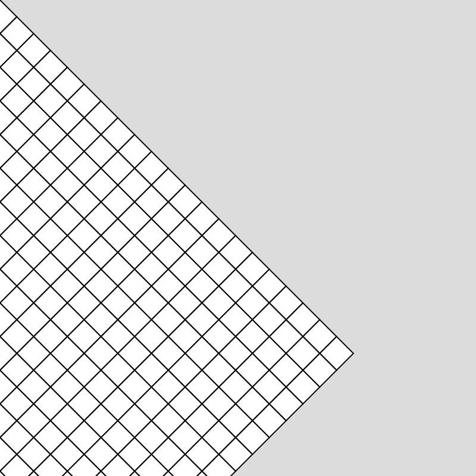
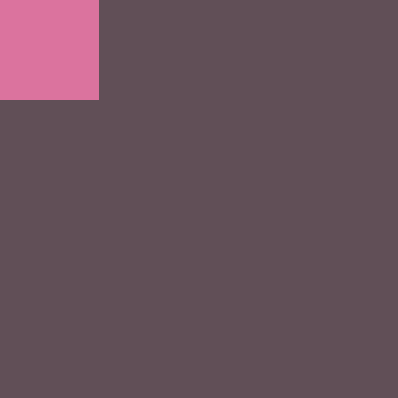
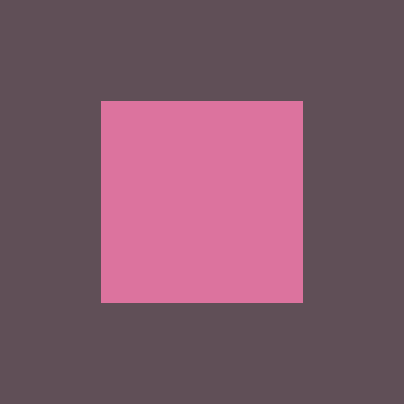
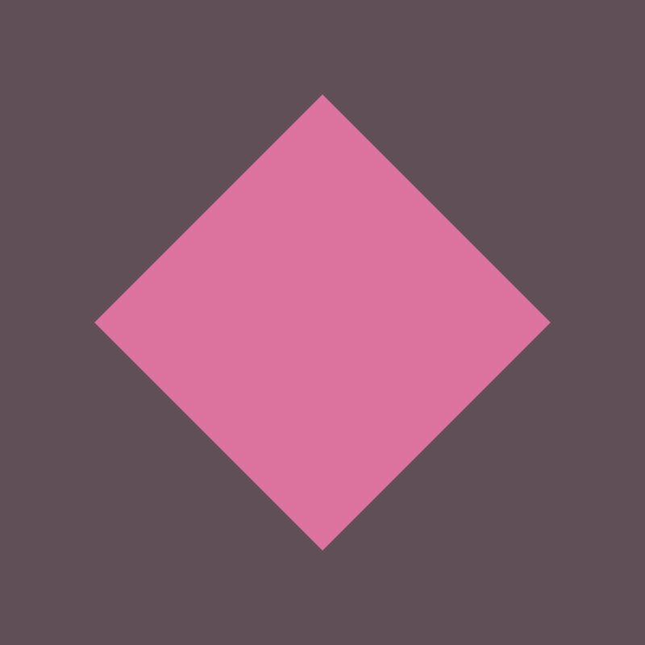

Time
Recap:
whileloop- local variables
forloops- nested loops
Plan:
rotate()translate()push()andpop()second(),minute(),hour()millis()
Rotation with rotate()
Rotation is handled in p5.js using the rotate() function. The rotate() function, by default, takes in angle in radians. For easier use, we change the rotate() function to use degree angles by using the function angleMode().
To set degree mode, with can use the key word DEGREES
angleMode(DEGREES)
How Rotation Works
When rotating objects within p5.js, we do not rotate a single object, instead we rotate the entirety of our coordinate system. As a result, when we use the rotate() function, we rotate our full canvas.
For example, if I make a grid of squares in a p5 sketch:

Code
And, then, I used the rotate function to rotate my sketch by 45 degrees…

Code
We notice that the whole coordinate system rotates by 45 degrees with the pivot point for the rotation being in the upper left corner of our canvas.
The question then arises, how do we use the rotate() function to rotate single objects? To answer that question, we can turn to the translate() function.
Translation with translate()
To rotate objects based on their own pivot points, for example, to rotate a square around its center point, we can make use of the function translate(). translate(), similar to rotation, translates the entire coordinate space of our sketch. The translate function takes the origin point, which is usually at (0,0) and translates, or moves, the origin to a new location. For example, using translate(width/2, height/2) will move my origin point from (0,0) to the center of my canvas.
For a practical example, if I draw a square at (0,0) in my sketch…

...and then use the translate function to move my origin to the center of my canvas…

...my square will then be at the center of my canvas.
From here, I can use the rotate function to rotate my coordinate space, effectively rotating my square which is at the origin of my coordinate space.

Code
Example:
Using rotate with variables:
Code
push() && pop()
Let’s say, I wanted to rotate multiple objects in different positions on my canvas. With our current set up of rotation in a single square, this would be impossible. If I try to move an object to a different position on my canvas, it will always rotate based on the origin point. As an example:
Add a smaller yellow square to the above sketch;
Code
By using push() and pop() we can create separate drawing spaces in which attributes such as rotate(), translate(), fill(), etc. only affect the shapes between our push() and pop().
In the below example, by using push() and pop(), each square is translated and rotated within its own drawing space:
Code
second() && map()
second()
Let’s try to use the rotate() and translate() function to make a basic clock. To do this, we will need to learn about the functions second() and map().
second() returns the real-world seconds. For example, if the current time is 4:00:05, second() with return 5.
Here is an example with second() printing out values:
Code
map()
To get an object, such as a line, to rotate based on second(), we can use themap() function. The map() function maps the range of one value onto another value.
For example, we could map the range of 0-60, the range of seconds in a minute, to the range of 0-360, the range of degrees within a circle.
To do this in our sketch, we could use the following line of code:
For the map() function, the first parameter is the value we want to map, in our case, the seconds at any given moment. The next two parameters are the range of our input value, 0 to 60 in our case. The final two parameters are the range we want to map the first range onto. In our case, this would be the degrees within a circle or, 0-360. The reason we use 60 and 360 as opposed to 59, and 359, is that since our ranges are cyclical, we need our map function to know the full range of each cycle. 60 and 360 are never reached, but they define the end of the cycle. In other words, we don’t want our second hand to be at the 12 hour marker when there are 59 seconds, we only want it to be there when second() returns 0.
Using our original rotation example above, we can create a simple seconds clock using the rotate(), translate(), second() and map() function:
Code
let rSecond = 0;
function setup() {
createCanvas(400, 400);
}
function draw() {
background(50, 75, 62);
noStroke();
angleMode(DEGREES);
translate(width / 2, height / 2);
fill(64, 136, 126);
circle(0, 0, 300);
rSecond = map(second(), 0, 60, 0, 360);
push();
rotate(rSecond);
strokeWeight(5);
stroke(225, 190, 106);
line(0, 0, 0, -120);
pop();
}
minute() && hour()
minute()and hour() work the same way as second():
minute()will return the current minute, a value between 0-59.hour()will return the current hour on a 24 hour clock, a value between the range of 0-23.
To finish our clock, we can add in our hands to account for our minute() and hour().
The only change we need to make is to convert our 24 hour time of hour() to 12 hour time.
We can do this us modulo (%):
By using %12, any number below 12 will return itself (1, for example, returns 1), while any number larger than 12 will return the remainder (13, for example, returns 1). This allows our clock to work on a full time scale.
We can make our clock using second(), minute(), hour(), rotate(), translate(), map(), push(), pop():
Code
let rSecond = 0;
let rMinute = 0;
let rHour = 0;
function setup() {
createCanvas(400, 400);
}
function draw() {
background(50, 75, 62);
noStroke();
angleMode(DEGREES);
translate(width / 2, height / 2);
fill(64, 136, 126);
circle(0, 0, 300);
rSecond = map(second(), 0, 60, 0, 360);
rMinute = map(minute(), 0, 60, 0, 360);
let h = hour()%12;
rhour = map(h, 0, 12, 0, 360);
push();
rotate(rSecond);
strokeWeight(5);
stroke(225, 190, 106);
line(0, 0, 0, -120);
pop();
push();
rotate(rMinute);
strokeWeight(5);
stroke(255);
line(0, 0, 0, -110);
pop();
push();
rotate(rhour);
strokeWeight(5);
stroke(0);
line(0, 0, 0, -80);
pop();
}
Milliseconds with millis()
Another way we can track time is using millis().
millis() tracks the amount of milliseconds that have passed since we started running our program. For instance, 5 seconds after I press play, millis() will return 5000 (5000 milliseconds).
We can use millis() to make many interesting sketches, such as starting animations after a certain time has passed, or by controlling events to only happen at certain intervals.
For example, if we want to make a sketch that only draws a circle every 2 seconds and clears after one minute, we can use millis() with some variables. In this example we are using the variable lastCircle to check if more than 2000 milliseconds have passed since the last circle was drawn. If that is true, we set lastCircle to the current millis() and continuously check if 2 seconds have passed. We do the same thing with lastClear.
Code
let lastCircle;
let lastClear;
let circleInterval = 2000; //20 Seconds
let clearInterval = 60000; //60 Seconds
function setup() {
createCanvas(400, 400);
background(50, 75, 62);
lastCircle = millis();
lastClear = millis();
}
function draw() {
noStroke();
if (millis() - lastCircle >= circleInterval) {
fill(64, 136, 126, 128);
circle(random(width), random(height), 40);
lastCircle = millis();
}
if (millis() - lastClear >= clearInterval) {
background(50, 75, 62);
lastClear = millis();
}
}
Example:
Using millis() to map motion:
In this example, we have a for loop that increases i between 1 and 30. We multiply this i value by 1000 to create different cycles. For example, 1 would make cycle = 1000, while 30 would make cycle= 30000. This cycle represents the amount of milliseconds it takes our ball to move across to the screen.
We then need to find how far we are into a given cycle. To do this, we can use modulo (%). Since modulo returns the remainder, the value it returns will always be between 0 and a cycle value. For example, if the cycle is equal to 1000, timeInCycle will always return a value between 0 and 1000.
Since we know how far we are into a given cycle, and since we know the range of a given cycle is between 0 and cycle, we can use this range with the map() function.
We can map the x position of our circle to the width of our canvas, taking the value from how far we are into a given cycle.
The result is that our circles move towards the end of the canvas over the duration of their cycle.
Code
let radius = 7;
function setup() {
createCanvas(400, 400);
}
function draw() {
angleMode(DEGREES);
background(50, 75, 62);
noStroke();
fill(64, 136, 126);
for (let i = 1; i <= 30; i += 1) {
let cycle = 1000 * i;
let timeInCycle = millis() % cycle;
let x = map(timeInCycle, 0, cycle, 0 - radius, width + radius);
let y = map(i, 1, 30, radius, height - radius);
circle(x, y, radius * 2);
}
}